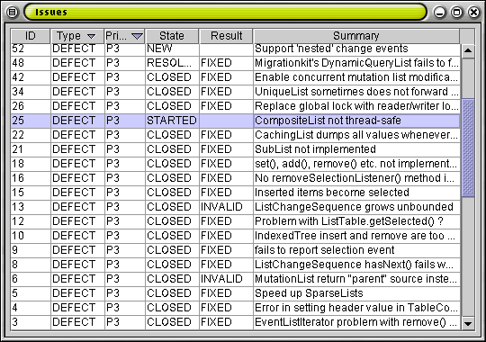

In part two of this tutorial we apply a sorted transformation to our issues list. We construct a JTable to display the list with a column for each important attribute of our issue class. Finally we add support to sort our JTable by the clicking on its column headers.
The SortedList is simply a wrapper that shows another EventList
in sorted order. Like all TransformedLists, the SortedList
listens for changes to its source list and adjusts itself when changes are made.
By layering TransformedLists like SortedList and
AbstractFilterList, we are able to create flexible and
powerful programs easily.
In order to do sorting in Java, we must be able to do comparisons
with either a Comparator
utility class or with elements that implement the
Comparable
interface. By writing Comparators (or implementing Comparable),
we gain full control of the sort order of our elements.
In our Issue class, we have decided to sort using the ID field as the only criteria.
|
Now that the SortedList can compare elements, we can simply
create a SortedList using the source list as the constructor argument.
The SortedList will provide a sorted view of the original list even
as the original list is modified.
|
Although the EventTableModel will take care of managing the
table rows, it is still necessary to do some set up. We need to specify column
names and how to get the value for a particular column. To do this
we implement the TableFormat interface.
|
Now that we have our columns prepared, we can replace our JList in
part one with a more sophisticated JTable. We simply replace the
EventListModel with an EventTableModel, which takes our
IssueTableFormat in its constructor. We use our sorted list as the
source list for our new EventTableModel, which shows the issues sorted
by event ID.
Although our table will be sorted by event ID, we would like our users to be
able to choose a different sorting criteria by clicking on the column headers.
For example, clicking on the "Type" header should sort our issues by type.
Glazed Lists includes a utility class for just this purpose called
TableComparatorChooser. The TableComparatorChooser is
flexible and allows us to specify zero or more Comparators for each
column. As the user clicks on a column's header, they cycle through the list
of Comparators for that column. You must also specify whether it shall
use simple single-column sorting or more powerful multiple-column sorting. The
TableComparatorChooser automatically includes a Comparator
for each column that sorts using the Comparable interface for that
column's value. If your column's value is not Comparable, you
must remove the default Comparator using
TableComparatorChooser.getComparatorsForColumn(column).clear().
|

We have constructed a JTable with a simple and elegant API.